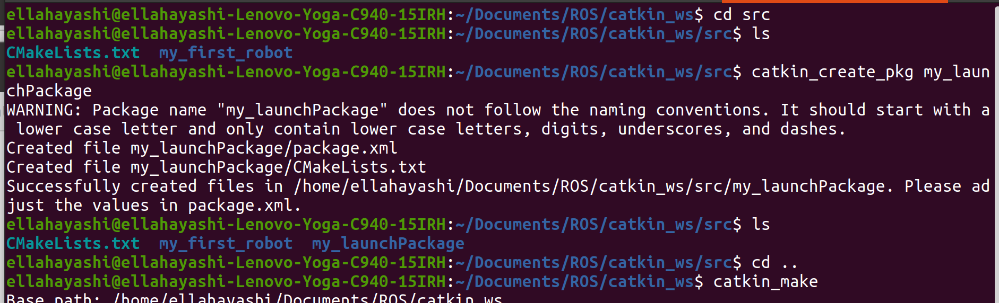
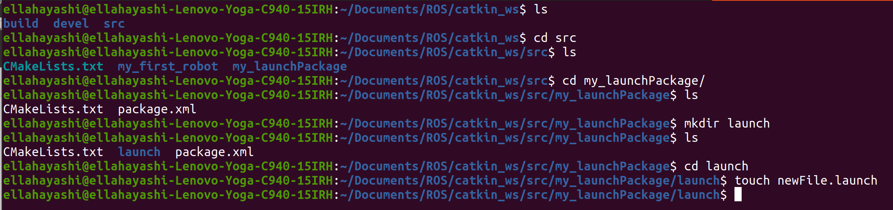
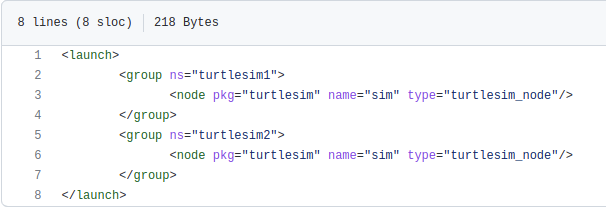

Launch Files
WHAT IS A LAUNCH FILE
A launch file can start every single node with just one file. With one robot you can have many different nodes with many different paramaters, making it impossible to start without a launch file.
CREATE LAUNCH FILE
Create a new package dedicated to launch files in your src folder, and catkin_make the environment
{kind=link}
Create a launch directory inside of the newly created package. Enter this directory and create a new .launch file
{kind=link}
The launch file is basically xml format. The launch file mainly consists of paramaters and node specifications. The contents of this file fit between a launch tag, <launch> and </launch>. The rest of the contents are paramaters, and nodes and other tags. The following is an example of a .launch file. We are viewing the turtlesim launch file. Note the node names and pkg’s named in this file. For more information on turtlesim please visit the Tutorial page of our Documentation
{kind=link}
Read more information on creating paramater tags
Read more information on creating node tags